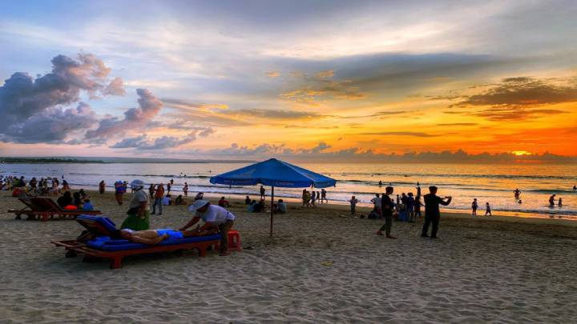

Gunung Bromo

Pantai Kuta adalah sebuah tempat pariwisata yang terletak di kecamatan Kuta,
sebelah selatan Kota Denpasar, Bali, Indonesia. Daerah ini merupakan sebuah tujuan
wisata turis mancanegara dan telah menjadi objek wisata andalan Pulau Bali sejak awal
tahun 1970-an. Pantai Kuta sering pula disebut sebagai pantai matahari terbenam (sunset
beach) sebagai lawan dari pantai Sanur. Selain itu, Lapangan Udara I Gusti Ngurah Rai
terletak tidak jauh dari Kuta.